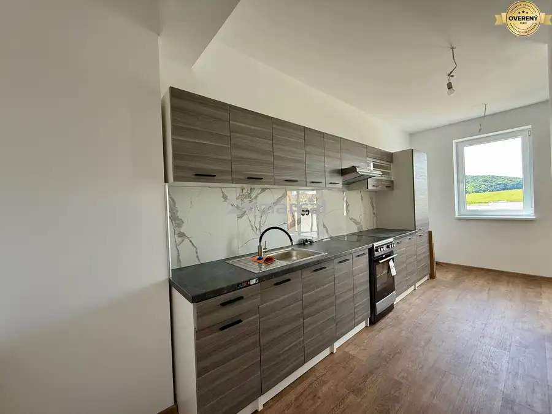
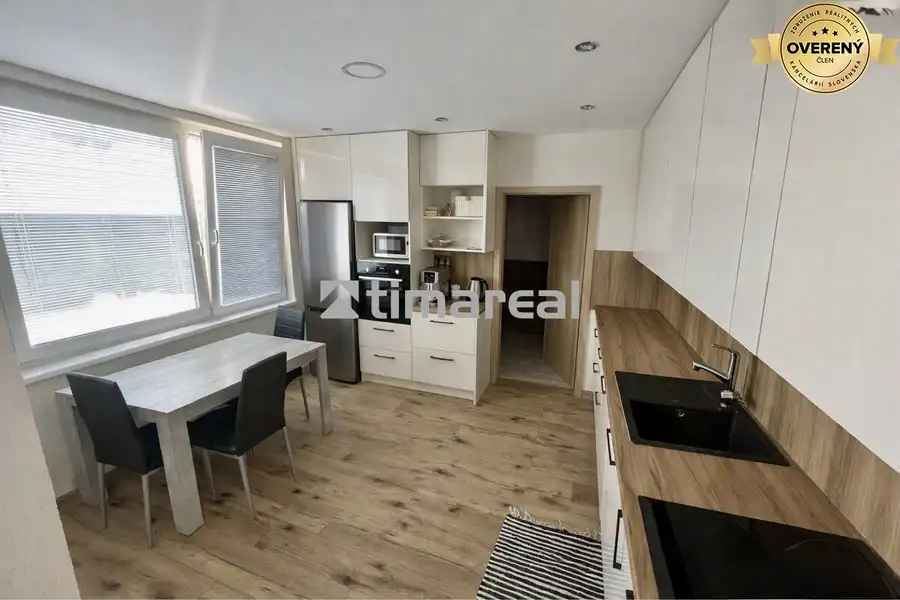
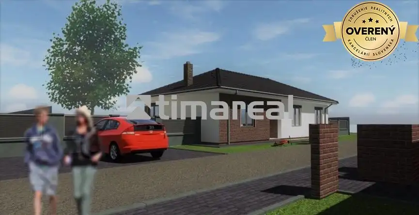

Výnimočná novostavba 3i RD v provensálskom štýle, Suchá nad Parnou
Suchá nad Parnou
- Dispozícia3-izbový
- Plocha93 m²
- Vlastníctvoosobné
O nehnuteľnosti
Tento dom mi tak trochu prirástol k srdcu. Keď som ho predávala majiteľovi v štádiu hrubej stavby vôbec som netušila, že dom budem mať v ponuke aj dokončený na komplet.
Vitajte v tomto výnimočnom 3 izbovom rodinnom dome v pokojnej lokalite mimo hlavnej cesty v obci Suchá nad Parnou, lokalita Vlčia dolina. Štýl domu vychádza s provensálskej architektúry čo prináša pôvabnú kombináciu elegancie a rustikálnej krásy. V dome dominuje priestranstvo so starostlivo navrhnutým interiérom, kde každý detail zohľadňuje komfort bývania.
Novostavba rodinného domu kolaudovaná v r. 2021 je postavená na pozemku o rozlohe 668m2, zastavaná plocha 112m2, úžitková plocha 93m2. Pri realizácii bolo použité obvodové murivo tehla, zateplenie polystyrénom, fasáda, plastové okná vo farbe. Elektrické podlahové kúrenie a krbové kachle vytvárajú pohodlnú a útulnú atmosféru. Za zmienku stoja aj zaujímavo nízke náklady na bývanie cca 70€.
3D obhliadka na vyžiadanie.
Vstúpte do tohto úžasného domu cez priestrannú chodbu, kde po ľavej strane sa dostanete do elegantnej kúpelňe so štýlovou samostatne stojacou vaňou a sprchovým kútom, samostatné WC, technická miestnosť alebo praktická práčovňa.
Po pravej strane sú umiestnené dve spálne, v každej sa nachádza praktický policový systém. Ak vkročíme do hlavného priestoru uvíta nás veľkorysá kuchyna s komorou a obývacou izbou oddelená praktickým ostrovčekom.
Okolie rodinného domu s okrasnými drevinami a nádhernými kaskádovými terasami pôsobí výnimočne. Je ideálne na trávenie voľného času a pozorovanie západov slnka. Bazén vytvára priestor na relax najmä v letných mesiacoch. Na pozemku sa nachádza záhradný domček a murovaná pivnica.
Parkovanie je zabezpečené v murovanej garáži, ktorú je potrebné dokončiť.
Tento dom je miestom kde sa kombinuje praktický dizajn s prírodou a vytvára prostredie na rodinné bývanie prípadne štýlové chalupárčenie.
Ak chcete so mnou nazrieť dnu a nasať atmosféru domova neváhajte ma kontaktovať - obhliadky možné 7 dní v týždni.
Naša spoločnosť pôsobí na trhu od roku 2004. Poskytujeme služby v oblasti sprostredkovania kúpy, predaja a prenájmu všetkých typov nehnuteľností a pre našich klientov zabezpečujeme kompletný právny servis. Naši makléri disponujú odbornými znalosťami, zodpovedným prístupom a preto sú zárukou serióznej a bezpečnej realizácie obchodu. Ochotne Vám zabezpečia vypracovanie znaleckých posudkov, dokumenty pre kataster nehnuteľností, poradenský servis pri vybavovaní hypotekárnych úverov a poistenie nehnuteľnosti prostredníctvom zmluvných partnerov.
Parametre
| Rozloha pozemku | 668 m² |
|---|---|
| Zastavaná plocha | 112 m² |
| Úžitková plocha | 93 m² |
| Poschodie | neuvedené |
| Počet poschodí | 1 |
| Počet izieb | 3 |
| Vlastníctvo | osobné |
| Odvoz odpadu | áno |
| Voda | studňa a vodovod |
| El. napätie | 230/400V |
| Plyn | nie |
| Kanalizácia | žumpa |
| Kúpeľňa | vaňa a sprchovací kút |
| Vykurovanie | vlastné - elektrické |
| Terasa | áno |
| Pivnica | áno |
| Garáž | áno |
| Parkovanie | vlastné vyhradené |
| Inžinierske siete | áno |
| Postavené z | tehla |
| Zariadenie | zariadený |
| Zateplený objekt | áno |
| Bazén | exteriérový |
| Krb | áno |
| Predzáhradka | áno |
| Bezbariérový prístup | nie |
| Okná | plastové |
| Terén | svahovitý |
| Prístupová cesta | asfaltová cesta |
| Novostavba | áno |
| Dátum zverejnenia | 23. 9. 2026 |
Kde to je
Mohlo by Vás zaujímať

Byt10 118 000 €Novostavba 2i bytu v štandarde s kuch. linkou, POD RÁBLOM Dvorníky 2-izbový57.7 m²2. podlažie Ponúkame na predaj novostavbu nízkoenergetického 2 izbového bytu dokončeného do štandardu vrátane kuchynskej linky v lokalite POD RÁBLOM - Dvorníky.…
Byt5 170 500 €* 3i byt po rekonštrukcii, 73m2, Hlohovec Hlohovec 3-izbový73 m²10. podlažie Hľadáte priestranný zrekonštruovaný byt v jednej z vyhľadávaných lokalít Hlohovca? Tento 3 izbový byt s veľkorysou rozlohou 73m2 môže byť tou…
Rodinné domy10 206 000 €Novostavba 4i rodinného domu v obci Pavlice Pavlice 4-izbový103 m² Ponúkame na predaj novostavbu 4 izbového rodinného domu - dvojdom mimo hlavnej cesty v obci Pavlice. Postavený na pozemku o rozlohe 380m2, zastavaná…